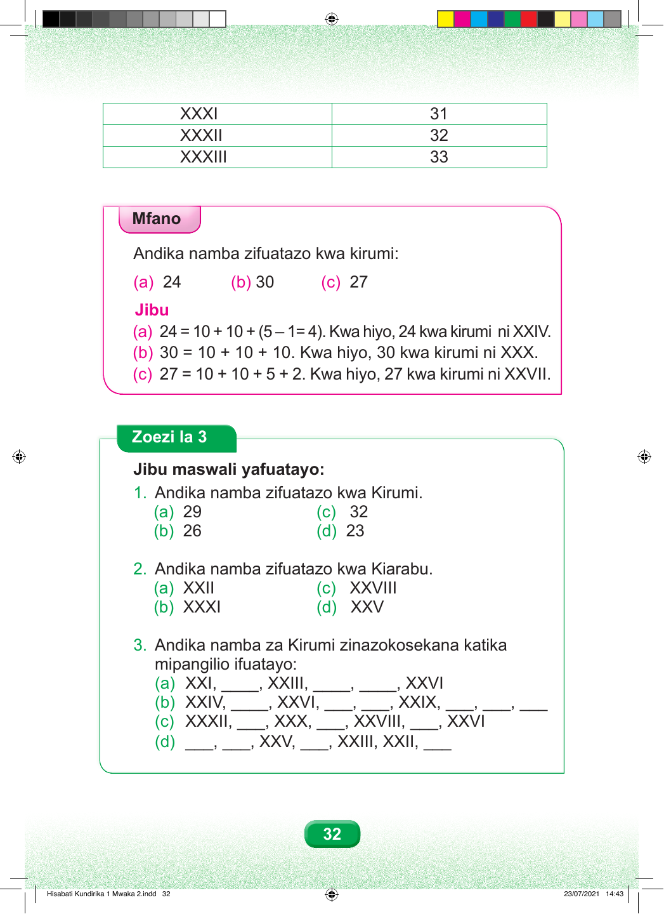

XXXI 31 XXXII 32 XXXIII 33 Mfano Andika namba zifuatazo kwa kirumi: (a) 24 (b) 30 (c) 27 Jibu (a) 24 = 10 + 10 + (5 – 1= 4). Kwa hiyo, 24 kwa kirumi ni XXIV. (b) 30 = 10 + 10 + 10. Kwa hiyo, 30 kwa kirumi ni XXX. (c) 27 = 10 + 10 + 5 + 2. Kwa hiyo, 27 kwa kirumi ni XXVII. Zoezi la 3 Jibu maswali yafuatayo: 1. Andika namba zifuatazo kwa Kirumi. (a) 29 (c) 32 (b) 26 (d) 23 2. Andika namba zifuatazo kwa Kiarabu. (a) XXII (c) XXVIII (b) XXXI (d) XXV 3. Andika namba za Kirumi zinazokosekana katika mipangilio ifuatayo: (a) XXI, ____, XXIII, ____, ____, XXVI (b) XXIV, ____, XXVI, ___, ___, XXIX, ___, ___, ___ (c) XXXII, ___, XXX, ___, XXVIII, ___, XXVI (d) ___, ___, XXV, ___, XXIII, XXII, ___ 32 Hisabati Kundirika 1 Mwaka 2.indd 32 23/07/2021 14:43